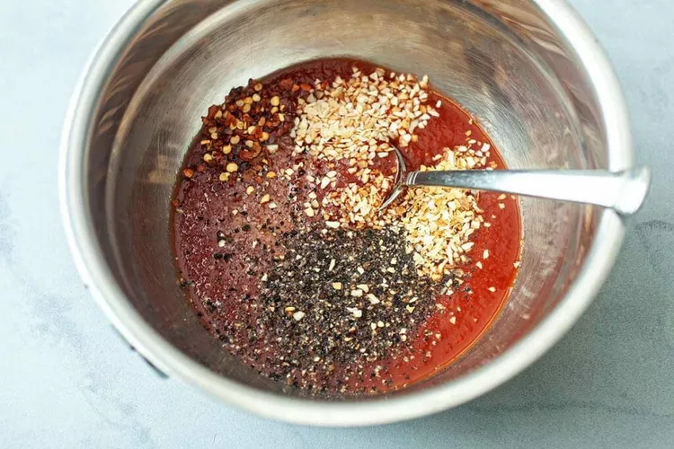
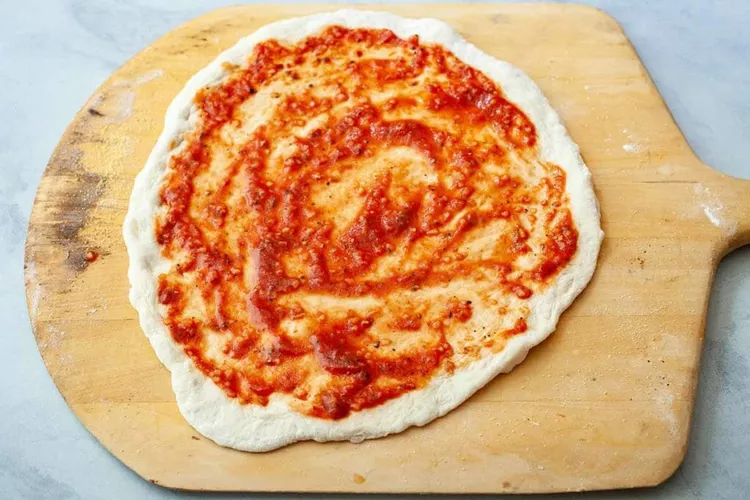
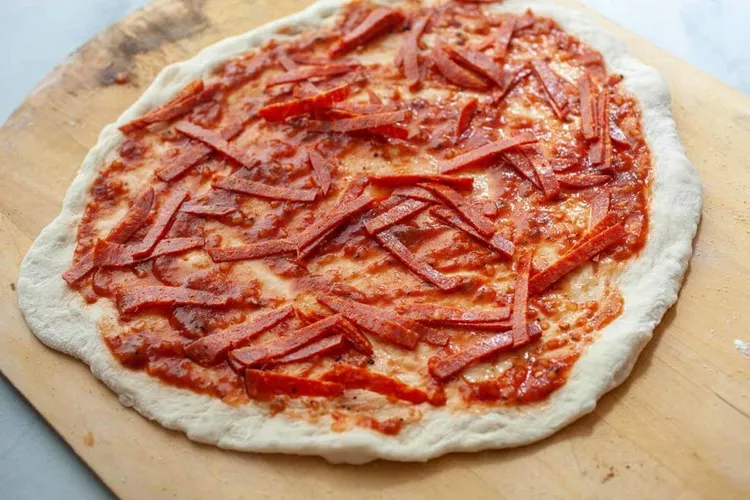
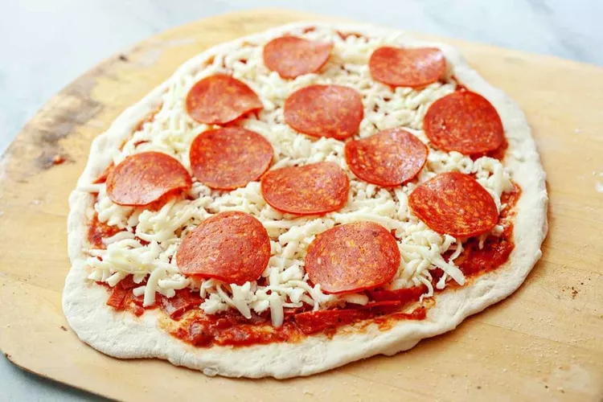

stir together the ingredients. The sauce recipe makes just enough for one large pizza.

Roll out dough on a lightly floured surface. If it's hard to roll, let it rest for 5 minutes so it can come to room temperature.
For a large pizza, I like to roll my dough into about a 14-inch diameter circle.

- Transfer the dough to a lightly dusted pizza peel. Alternatively, fit it into a large cast-iron.
- Add sauce in a light layer all over the pizza, leaving about 1/4-inch crust around the edges.

- Chop half of the pepperoni and sprinkle it over the sauce.

- Top the pizza with grated cheese and the rest of the pepperoni.

- Season with black pepper.
- If you're using a pizza stone
- carefully slide pizza into the center of the preheated pizza stone. Cook for 6 minutes
- rotate the pizza halfway so it cooks evenly.
- Cook for another 6 to 8 minutes, or until the crust is golden brown and charred in spots.
- If you're using a skillet
- press the dough into a cast iron skillet and add toppings.
- Place the skillet over a high heat burner for 2 minutes to get it preheated and get the crust cooking right away.
- transfer to a 500 °F oven and bake for 10 to 12 minutes, or until the crust is golden brown.